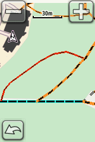
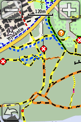
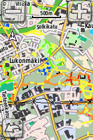
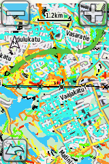

Latauslinkit
Kartat päivittyvät kerran vuorokaudessa
Tampereen alue
Oulun alue
Käyttö
Siirrä lataamasi .img-tiedosto laitteen muistikortille kansioon 'GARMIN'. Tämän jälkeen kartan pitäisi olla valittavissa samasta valikosta kuin muutkin. Huom: mikäli laitteesi ei tue useita karttatiedostoja kerralla, vaihda tiedoston nimeksi 'gmapsupp.img' ja korvaa alkuperäinen. Muista varmuuskopio korvattavasta tiedostosta.
Ulkoasu laitteessa (Garmin Edge 800)





Overzoom-taso 28
Overzoom-taso 26
Zoom-taso 24
Zoom-taso 22
Zoom-taso 20